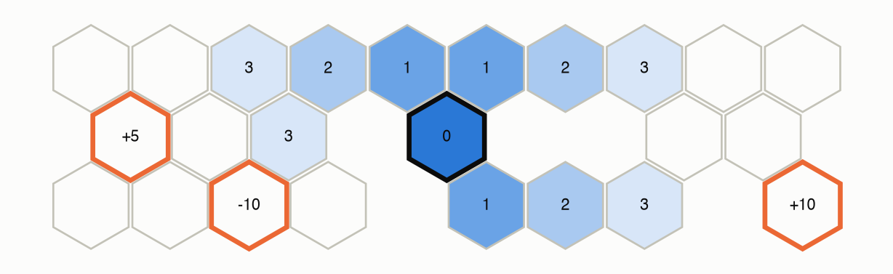
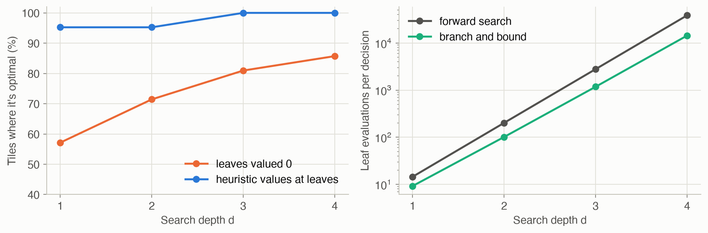
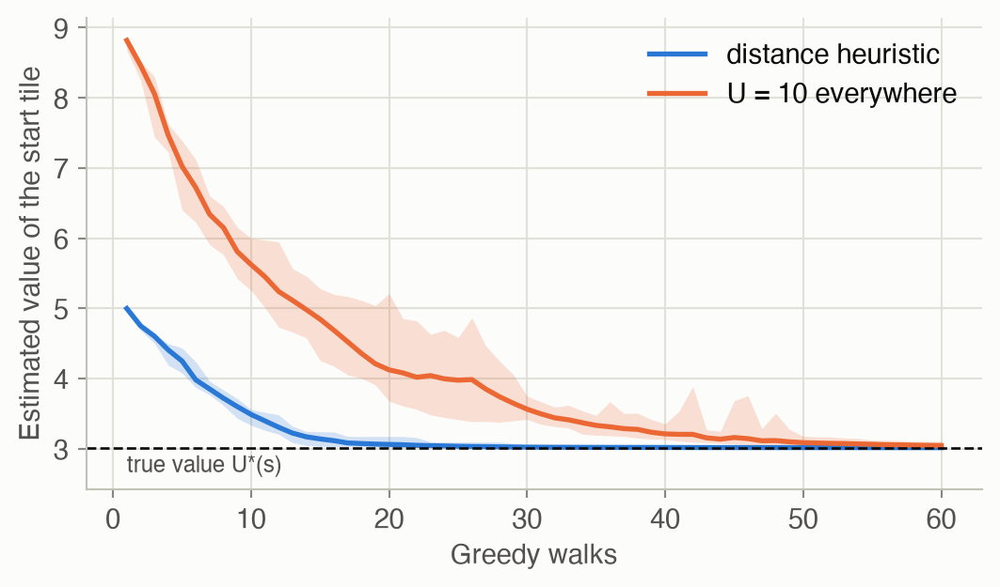
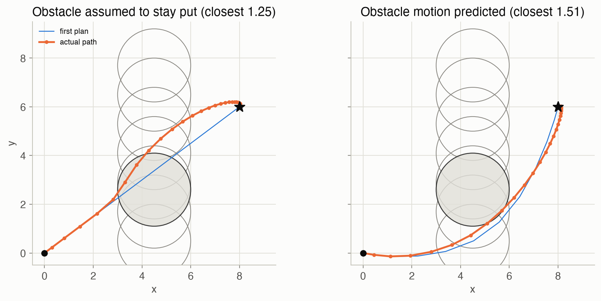

9 · Online Planning
Part II — Sequential Problems
Big picture
Where this chapter fits
Chapter 7 computed a policy for every state before acting, and Chapter 8 did the same with an approximate value function. Both are offline: all the work happens before the first move, and both struggle when the state space is huge. This chapter turns the problem around. An online planner waits until it knows the current state, then reasons only about the states reachable from there, picks one action, acts, and repeats. The same idea powers game-playing programs (Monte Carlo tree search was central to AlphaGo), robot controllers (model predictive control), and the online POMDP planners of Chapter 22.
The question: how do you choose a good action for the state you’re in right now, without solving the whole problem?
The short answer: look ahead from the current state, as far and as widely as you can afford, estimate what lies beyond, pick the best first action, then do it all again from the next state. The methods differ in how they spend a fixed amount of thinking: exhaustively, with bounds that prune, with random samples, or guided by optimism.
The key ideas at a glance
Plan from where you are, then replan. From any one state, only a small part of the state space is reachable in a few steps. Receding horizon planning looks \(d\) steps ahead from the current state, takes the best first action, and repeats from wherever it lands. Replanning at every step makes up for a short horizon and for surprises.
Forward search: try everything, then estimate beyond the horizon. Expand every action and every possible outcome to depth \(d\), and put a value estimate \(U(s)\) at the leaves. The cost grows exponentially with depth, so the leaf values matter enormously. A good offline estimate, such as one from Chapter 8, makes a shallow search good. Combining the two is called hybrid planning.
Branch and bound: skip what can’t win. With a lower bound on values and an upper bound on action values, a branch whose best case is worse than something already found needn’t be explored. It returns exactly what forward search does, usually with far less work.
Sampling: simulate instead of enumerate. You only need a simulator, not the full transition table:
- Rollouts estimate a state’s value by simulating some simple policy.
- Sparse sampling follows only \(m\) sampled outcomes per action, so its cost no longer depends on the number of states.
- Monte Carlo tree search (MCTS) grows a search tree one simulation at a time. It chooses actions with an upper confidence bound (UCB1) that balances actions that look good against actions that haven’t been tried much, so effort flows to promising branches.
Heuristic search: be optimistic, then correct. Start from an optimistic value (an upper bound, also called an admissible heuristic). Repeatedly simulate the greedy policy, updating values along the way. Optimism lures the search into unexplored states, and each disappointment corrects a value. Labeled heuristic search marks states “solved” once their values stop changing, and stops when the current state is solved.
Open-loop planning: commit to a sequence. Instead of a plan that reacts to future outcomes, optimize a fixed sequence of actions, often as a fast continuous optimization. This is model predictive control (MPC). It ignores the chance to adapt later, which can cost a lot when outcomes are uncertain, but replanning at every step recovers much of that.
Vocabulary
| Term | Plain meaning |
|---|---|
| Online planning | Choosing an action for the current state only, at decision time |
| Receding horizon | Plan \(d\) steps ahead, take one step, replan |
| Leaf value \(U(s)\) | Estimated value of a state at the edge of the search |
| Hybrid planning | Online search plus an offline value estimate at the leaves |
| Rollout | A simulation of a simple policy, used to estimate a value |
| Generative model | A simulator that samples a next state and reward |
| Branch and bound | Search that prunes branches using upper and lower bounds |
| Sparse sampling | Search that follows \(m\) sampled outcomes per action |
| Monte Carlo tree search (MCTS) | Grow a search tree by repeated simulations, guided by UCB1 |
| UCB1 | Action score: estimated value plus a bonus for trying rarely tried actions |
| Admissible heuristic | An optimistic value estimate: never below the true optimal value |
| Open-loop plan | A fixed sequence of actions, chosen without reacting to outcomes |
| Model predictive control (MPC) | Optimize an open-loop plan, apply its first action, replan |
After this chapter you can
- Explain receding horizon planning, and why leaf values and depth trade off.
- Run forward search, branch and bound, sparse sampling and MCTS, and compare their costs.
- Compute UCB1 scores and explain the role of the exploration constant.
- Use an admissible heuristic in heuristic search, and say when a state is “solved”.
- Distinguish open-loop from closed-loop plans, and set up a simple model predictive controller.
Intuition
TipAnalogy
A chess player doesn’t memorize the best move for every possible board. At the board, they think a few moves ahead from this position, judge the resulting positions with experience (“I’m up a knight, that’s good”), play a move, and think again after the reply.
- Thinking through every reply is forward search.
- Not bothering with a line once it’s clearly worse than one already found is branch and bound.
- Thinking harder about the promising lines is Monte Carlo tree search.
- “Experience” is the value estimate at the leaves.
We’ll use Hex World (Figure 2): 24 hexagonal tiles, three of them special (+5, −10, +10; landing on one ends the game after collecting it). Each move goes the intended way with probability 0.7, and veers to a neighboring direction otherwise. Bumping a wall costs 1, and future rewards are discounted by \(\gamma = 0.9\) per step. We know the exact optimal policy from Chapter 7, so we can score every planner against it.

Plan from where you are
From the middle tile, only 11 of the 24 tiles can be reached within 3 steps. An online planner never needs values for the rest. Yet a complete search tree of depth 3 from there has 3,078 leaves: there are 6 actions and up to 3 outcomes each, so up to 18 branches per step, and the same tiles appear many times along different paths. See Equation 1.
Forward search and leaf values
Search 3 steps ahead from each of the 21 decision tiles, valuing the leaves at 0 (“I don’t know what happens after that”). This picks the optimal action on 81% of the tiles. Put a rough estimate at the leaves instead, the value of a simple heuristic policy, and even a 1-step search is optimal on 95%, while a 3-step search is optimal on all of them. The search fixes the estimate’s mistakes near the root, and the estimate stands in for everything beyond the horizon (Figure 6).
Pruning with bounds
Suppose the first action you examine is worth 3.2, and an upper bound says another action can be worth at most 2.9. There’s no need to look inside that other action at all. Branch and bound makes exactly the same choices as forward search here, but evaluates only 42% as many leaves at depth 3. See Equation 3.
Sampling and Monte Carlo tree search
Instead of weighing every outcome, simulate: take an action, sample where you land, keep going. Monte Carlo tree search does this again and again from the current state. At each state already in its tree, it picks the action with the best optimistic score: the average return seen so far, plus a bonus that is large for actions tried only a few times. After 500 simulations from each decision tile, it picks the optimal action 89% of the time with a well-scaled bonus (\(c = 10\)), but only 62% with a bonus 10 times too small (\(c = 1\)), because it then stops exploring too soon. See Equation 5.
Heuristic search: optimism, then correction
Start by believing every tile is as good as it could possibly be: the best reward, discounted by the fewest moves needed to reach it. Then walk the greedy path, and after each step replace the tile’s value with a one-step lookahead. Optimistic values pull the walk toward unexplored tiles, and every visit makes a value more realistic. With this heuristic, 20 walks from each tile pick the optimal action 99.5% of the time. With the lazy heuristic “every tile is worth 10”, it’s 87%: a looser heuristic needs more walks. See Equation 7.
Open loop vs. closed loop
A delivery drone can fly the valley route, worth 25 whatever happens, or the ridge route, where the wind turns out to blow left or right, 50/50. On the ridge, the matching turn earns 40 and the wrong turn 5.
- Choosing a fixed sequence of actions in advance, the ridge is worth only \(0.5 \times 40 + 0.5 \times 5 = 22.5\), so the valley wins.
- A closed-loop plan turns after seeing the wind, and the ridge is worth 40.
Open-loop planning is cheaper but can’t value the chance to react. See Equation 9.
Formalism
Receding horizon and forward search
A receding horizon planner, at each time step, looks ahead \(d\) steps from the current state, takes the best first action, and replans from the next state (ADM §9.1). Forward search does the lookahead exhaustively (ADM §9.3):
\[ U_d(s) = \max_{a} \left( R(s, a) + \gamma \sum_{s'} T(s' \mid s, a)\, U_{d-1}(s') \right), \qquad U_0(s) = U(s) \tag{1}\]
In words. The value of a state with \(d\) steps to go is the best action’s reward plus the discounted average value, with \(d - 1\) steps to go, of where it leads. At the bottom of the tree, use the estimate \(U\).
Term by term.
- \(U(s)\) is the leaf estimate: 0 if we just want the best \(d\)-step plan, or an offline approximation (Chapter 8) to account for what lies beyond.
- The action chosen now is the maximizing \(a\) at the root.
- The tree has up to \((|\mathcal{S}| \times |\mathcal{A}|)^d\) leaves, so the cost is exponential in the depth.
Why it holds. This is \(d\) steps of value iteration (Chapter 7), but computed only for states reachable from the root, recursively rather than for all states at once. If \(U = U^*\), the result is exactly optimal at any depth.
Rollouts
A rollout simulates a policy \(\pi\) (often random or a simple rule) for \(d\) steps using a generative model \(s' \sim T(s, a)\), and returns the discounted sum of rewards (ADM §9.2):
\[ \hat U^{\pi}(s) = \sum_{t=1}^{d} \gamma^{t-1} r_t, \qquad a_t \sim \pi(s_t),\ \ (s_{t+1}, r_t) \sim \text{simulate}(s_t, a_t) \tag{2}\]
In words. Play the game forward with a simple policy and add up the discounted rewards. Averaged over \(m\) rollouts, this estimates the policy’s value.
Term by term. A one-step lookahead on rollout values is an approximate policy improvement step (Chapter 7): it usually beats the rollout policy, but has no optimality guarantee. The cost is \(O(m \times |\mathcal{A}| \times |\mathcal{S}| \times d)\) with \(m\) rollouts per next state.
Branch and bound
With a lower bound \(\underline{U}(s) \le U^*(s)\) for the leaves and an upper bound \(\overline{Q}(s, a) \ge Q^*(s, a)\), examine actions from the highest upper bound down (ADM §9.4):
\[ \text{skip action } a \text{ (and all remaining ones) if } \ \overline{Q}(s, a) < \max_{a' \text{ examined}} \hat Q(s, a') \tag{3}\]
In words. If even the most optimistic value of an action is below something you’ve already found, its subtree can’t change the answer.
Term by term.
- \(\hat Q(s, a')\) is the value forward search computes for an action already examined, using \(\underline U\) at the leaves.
- Sorting actions by \(\overline{Q}\) means that once one fails the test, every later one does too.
- Worst case: nothing is pruned, and the cost equals forward search.
Why it holds. Backups preserve lower bounds, so every \(\hat Q\) computed with \(\underline U\) at the leaves is at most \(Q^*\), which is at most \(\overline Q\). An action with \(\overline{Q}(s, a) < \hat Q(s, a')\) therefore can’t have a larger \(\hat Q\) than \(a'\). On Hex World, the upper bound comes from the fewest moves to each positive reward, and the lower bound is the exact value of acting greedily on that upper bound: any policy’s value is a lower bound on the optimum.
Sparse sampling
Replace the sum over all next states with an average over \(m\) samples (ADM §9.5; M. Kearns, Y. Mansour and A. Ng, Machine Learning, 2002):
\[ \hat Q_d(s, a) = \frac{1}{m} \sum_{i=1}^{m} \Big( r^{(i)} + \gamma \max_{a'} \hat Q_{d-1}\big(s'^{(i)}, a'\big) \Big), \qquad (s'^{(i)}, r^{(i)}) \sim \text{simulate}(s, a) \tag{4}\]
In words. For each action, sample \(m\) outcomes and recurse on each. Average the results.
Term by term. The tree has \((m \times |\mathcal{A}|)^d\) leaves: still exponential in depth, but independent of the number of states. That’s what matters for huge or continuous state spaces. With \(\hat Q_0\) replaced by the leaf estimate \(U\), the estimate is noisy but converges to forward search as \(m\) grows.
Monte Carlo tree search
MCTS runs \(m\) simulations from the current state (ADM §9.6). Each simulation walks down the current tree choosing actions by UCB1, adds one new state when it leaves the tree, estimates that state’s value (by a rollout or a value function), and updates the statistics along the path. Inside the tree it chooses:
\[ a = \mathop{\mathrm{arg\,max}}_{a} \; Q(s, a) + c \sqrt{\frac{\log N(s)}{N(s, a)}}, \qquad N(s) = \sum_a N(s, a) \tag{5}\]
In words. Prefer actions that have done well, but add a bonus that shrinks as an action is tried more often and grows (slowly) as the state is visited more. An action never tried gets an infinite bonus.
Term by term.
- \(Q(s, a)\) is the average return seen after taking \(a\) in \(s\), and \(N(s, a)\) is how often that happened.
- \(c\) sets the exploration strength. It must be on the scale of the values: too small and the search fixes on an early favorite, too large and it wastes simulations on bad actions.
- After the simulations, act with \(\arg\max_a Q(s, a)\).
Why it holds. The bonus comes from a concentration bound (Chernoff–Hoeffding): with high probability the true mean is below \(Q + \sqrt{2 \log N / N(s, a)}\) for values in \([0, 1]\). Picking the highest upper confidence bound is optimism in the face of uncertainty, the same idea as in exploration (Chapter 15; P. Auer, N. Cesa-Bianchi and P. Fischer, Machine Learning, 2002). After each simulation returns \(q\), the statistics update as a running mean:
\[ N(s, a) \leftarrow N(s, a) + 1, \qquad Q(s, a) \leftarrow Q(s, a) + \frac{q - Q(s, a)}{N(s, a)} \tag{6}\]
In words. Count the visit, then move the average toward the new return by one over the count, which keeps \(Q\) equal to the mean of all returns seen.
Term by term. \(q = r + \gamma \times\) (the value returned by the rest of the simulation). For large or continuous spaces, progressive widening limits how many actions or next states each node may have, growing with its visit count.
Heuristic search and labeling
Heuristic search (ADM §9.7; A. Barto, S. Bradtke and S. Singh, Artificial Intelligence, 1995) keeps a value table \(U\), initialized to an upper bound \(\overline U \ge U^*\), and runs \(m\) greedy simulations of depth \(d\) from the current state, updating every visited state:
\[ U(s) \leftarrow \max_a \left( R(s, a) + \gamma \sum_{s'} T(s' \mid s, a)\, U(s') \right) \quad \text{for each } s \text{ visited by the greedy policy} \tag{7}\]
In words. Walk where the current values say is best, and correct each value you pass with a one-step lookahead.
Term by term.
- An admissible heuristic \(\overline{U}\) (never below \(U^*\)) makes unexplored states look attractive, so they get visited and corrected.
- Backups keep \(U\) above \(U^*\) throughout, and the values converge to \(U^*\) on the states the optimal policy reaches.
- Tighter upper bounds need fewer simulations.
Labeled heuristic search (ADM §9.8; B. Bonet and H. Geffner, ICAPS, 2003) calls a state solved when every state in its greedy envelope (the states the greedy policy can reach from it) has a small residual:
\[ \big|\, U(s') - \max_a \big(R(s', a) + \gamma \textstyle\sum_{s''} T(s'' \mid s', a)\, U(s'')\big) \big| < \delta \quad \text{for every } s' \text{ in the greedy envelope of } s \tag{8}\]
In words. A state is solved when one more lookahead wouldn’t change any value it depends on by more than \(\delta\).
Term by term. Solved states are never updated again, and simulations stop when they reach one. The search ends when the current state is solved, so it spends effort only where values are still moving.
Open-loop planning and model predictive control
A closed-loop plan says what to do in every future state, so it can react to what happens. An open-loop plan is a fixed sequence of actions (ADM §9.9):
\[ \max_{a_{1:d}} \ U(a_{1:d}), \qquad U(a_{1:d}) = \mathbb{E}\left[ \sum_{t=1}^{d} \gamma^{t-1} R(s_t, a_t) \right] \tag{9}\]
In words. Choose the whole sequence of actions up front to maximize the expected return.
Term by term. \(U(a_{1:d})\) averages over outcomes but can’t condition later actions on them, so an open-loop plan can never beat the best closed-loop plan, and can be much worse (the drone example). Its advantage is that it’s often a fast continuous optimization.
Model predictive control makes it concrete by assuming deterministic dynamics (for example, the most likely outcome), solving the optimization, applying only the first action, and replanning:
\[ \max_{a_{1:d},\, s_{2:d}} \ \sum_{t=1}^{d} \gamma^{t} R(s_t, a_t) \quad \text{subject to} \quad s_{t+1} = T(s_t, a_t),\ \ t = 1, \ldots, d-1 \tag{10}\]
In words. Pretend the future is predictable, find the best action sequence under that assumption, use its first step, and repeat as reality unfolds.
Term by term.
- \(T(s, a)\) here is a deterministic function. With linear dynamics and a concave reward (a convex cost), the problem is convex and fast to solve.
- Robust MPC instead maximizes the worst case over a set of possible outcomes, which is safer but often very conservative.
- Multiforecast MPC plans against \(m\) sampled scenarios, either for the worst one or on average, with a separate action sequence per scenario but a shared first action. This is also called hindsight optimization.
Costs at a glance
| Method | Needs | Cost per decision |
|---|---|---|
| Forward search | \(T\), \(R\) | \(O\big((\lvert\mathcal{S}\rvert\lvert\mathcal{A}\rvert)^d\big)\) |
| Branch and bound | \(T\), \(R\), bounds | same worst case, often far less |
| Rollout lookahead | simulator, rollout policy | \(O(m \lvert\mathcal{A}\rvert\lvert\mathcal{S}\rvert d)\) |
| Sparse sampling | simulator | \(O\big((m\lvert\mathcal{A}\rvert)^d\big)\) |
| Monte Carlo tree search | simulator | \(O(m d)\) for \(m\) simulations |
| Heuristic search | \(T\), \(R\), admissible heuristic | \(O(m d \lvert\mathcal{S}\rvert\lvert\mathcal{A}\rvert)\) |
| Open-loop / MPC | (usually deterministic) model, optimizer | one optimization per step |
Worked example
Forward search, one step, by hand
From the middle tile, a depth-1 search values each action by its reward plus the discounted expected leaf value. Here the leaf values are the heuristic policy’s values \(\underline{U}\) (the lower bound). For NE, for instance, the move goes NE with probability 0.7 and veers to NW or E with 0.15 each.
| Action | Outcomes (probability → tile) | \(R(s,a)\) | Expected leaf value | Search value | \(Q^*(s, a)\) |
|---|---|---|---|---|---|
| E | 0.15 → (0, 5), 0.70 → (1, 4), 0.15 → (2, 5) | -0.70 | 3.17 | 2.16 | 2.16 |
| NE | 0.15 → (0, 4), 0.70 → (0, 5), 0.15 → (1, 4) | -0.15 | 3.51 | 3.01 | 3.01 |
| NW | 0.70 → (0, 4), 0.15 → (0, 5), 0.15 → (1, 4) | -0.15 | 3.12 | 2.66 | 2.66 |
| W | 0.15 → (0, 4), 0.85 → (1, 4) | -0.85 | 3.01 | 1.86 | 1.86 |
| SW | 0.85 → (1, 4), 0.15 → (2, 5) | -0.85 | 3.07 | 1.91 | 1.91 |
| SE | 0.30 → (1, 4), 0.70 → (2, 5) | -0.30 | 3.26 | 2.64 | 2.64 |
Each search value is \(R(s,a) + 0.9 \times\) (expected leaf value). The search picks NE, and the optimal action is NE. Here the search values equal \(Q^\*\) exactly: the heuristic policy happens to be optimal on every tile one step from the middle, so its values there are the optimal values. In general, lower-bound leaves give search values at or below \(Q^\*\), and only their *ranking* matters.
UCB1 by hand
After 10 simulations at a state, action A has been tried 7 times with average return 3.0, and action B 3 times with average 2.6. Then \(\log N(s) = \log 10 = 2.303\).
| \(c = 1\) | \(c = 10\) | |
|---|---|---|
| A: \(3.0 + c\sqrt{2.303/7}\) | \(3.0 + 0.57 = \mathbf{3.57}\) | \(3.0 + 5.74 = 8.74\) |
| B: \(2.6 + c\sqrt{2.303/3}\) | \(2.6 + 0.88 = 3.48\) | \(2.6 + 8.76 = \mathbf{11.36}\) |
Open loop vs. closed loop by hand
The drone’s four open-loop plans, and the closed-loop plan:
| Plan | Expected reward |
|---|---|
| valley, then left | 25 |
| valley, then right | 25 |
| ridge, then left | \(0.5 \times 40 + 0.5 \times 5 = 22.5\) |
| ridge, then right | \(0.5 \times 5 + 0.5 \times 40 = 22.5\) |
| ridge, then turn with the wind (closed loop) | \(0.5 \times 40 + 0.5 \times 40 = \mathbf{40}\) |
Interactive
Monte Carlo tree search at the root
Scrub through the simulations of MCTS from the middle tile and watch the root statistics. Bars show each action’s current average return \(Q(s, a)\), the numbers are the visit counts \(N(s, a)\), and ticks mark the true optimal values \(Q^*(s, a)\). With \(c = 1\) the search settles on an early favorite; with \(c = 10\) it keeps checking the others.
Two things to notice:
- The bars sit well below the ticks. MCTS’s averages include the returns of its own exploratory moves deeper in the tree, including bumps into walls. Hex World’s paths also loop back to the middle tile, so the root’s statistics pool returns from different depths. The averages value the search’s own mixed behavior, not the optimal one.
- Only the ranking matters, and it’s fragile. With \(c = 10\) the search still prefers the optimal NE after 820 simulations, but NW has overtaken it by 830. The true values of these two actions differ by only 0.35.
Receding horizon on mountain car
Mountain car (Chapter 8) needs about 106 steps to escape the valley, far beyond any affordable search depth. Choose the search depth, and what the planner assumes lies beyond its horizon: nothing, or the approximate value function from Chapter 8 on a coarse or a fine grid. The path is the car’s actual trip in the state space.
Algorithms & code
Exhaustive search: forward search and branch and bound
def lookahead(mdp, U, s: int, a: int) -> float:
"""R(s, a) + gamma * sum_s2 T(s2 | s, a) U(s2), visiting only the
next states that can actually happen."""
p = mdp.T[s, a]
future = sum(p[s2] * U(s2) for s2 in np.flatnonzero(p))
return float(mdp.R[s, a] + mdp.gamma * future)
def forward_search(mdp, s: int, d: int, U) -> tuple[int | None, float]:
"""Best action and its value, searching every action and every
possible next state to depth d, with U(s) at the leaves."""
if d <= 0:
return None, U(s)
def U_next(s2): # value of s2 with d - 1 steps left
return forward_search(mdp, s2, d - 1, U)[1]
q = [lookahead(mdp, U_next, s, a) for a in range(mdp.T.shape[1])]
a = int(np.argmax(q))
return a, q[a]
def branch_and_bound(mdp, s: int, d: int, U_lo, Q_hi) -> tuple:
"""Forward search that skips actions which can't win: U_lo (a lower
bound on U) values the leaves, and Q_hi (an upper bound on Q) says how
good an action could possibly be."""
if d <= 0:
return None, U_lo(s)
def U_next(s2):
return branch_and_bound(mdp, s2, d - 1, U_lo, Q_hi)[1]
best_a, best_u = None, -np.inf
# Try the most promising actions first, so pruning starts early.
for a in sorted(range(mdp.T.shape[1]), key=lambda a: -Q_hi(s, a)):
if Q_hi(s, a) < best_u:
break # this action and all later ones can't do better
u = lookahead(mdp, U_next, s, a)
if u > best_u:
best_a, best_u = a, u
return best_a, best_uusing ADM, LinearAlgebra
# Hex World from the problem zoo: T[s, a, s′], R[s, a], γ. States and actions are indices.
mdp = hex_world()
nS, nA = size(mdp.R)
# R(s, a) + γ Σ T(s′ | s, a) U(s′), visiting only next states that can happen.
lookahead(mdp, U, s, a) = mdp.R[s, a] + mdp.γ * sum(mdp.T[s, a, s′] * U(s′) for s′ in findall(>(0), mdp.T[s, a, :]))
# Best action and its value, searching every action and outcome to depth d; U values the leaves.
function forward_search(mdp, s, d, U)
d <= 0 && return (a = nothing, u = U(s))
U′(s′) = forward_search(mdp, s′, d - 1, U).u # value with d - 1 steps left
q = [lookahead(mdp, U′, s, a) for a in 1:nA]
a = argmax(q)
return (a = a, u = q[a])
end
# Same answer as forward search, skipping actions whose upper bound Q_hi can't beat the best so far.
function branch_and_bound(mdp, s, d, U_lo, Q_hi)
d <= 0 && return (a = nothing, u = U_lo(s))
U′(s′) = branch_and_bound(mdp, s′, d - 1, U_lo, Q_hi).u
best = (a = nothing, u = -Inf)
for a in sort(1:nA, by = a -> -Q_hi(s, a)) # most promising first
Q_hi(s, a) < best.u && break # nothing left can win
u = lookahead(mdp, U′, s, a)
u > best.u && (best = (a = a, u = u))
end
return best
end
# Exact optimum (value iteration to a tight tolerance) to check against.
function solve(mdp; tol = 1e-12)
U = zeros(nS)
while true
U′ = [maximum(lookahead(mdp, s′ -> U[s′], s, a) for a in 1:nA) for s in 1:nS]
maximum(abs.(U′ - U)) < tol && return U′
U = U′
end
end
U_star = solve(mdp)
Q_star(s, a) = lookahead(mdp, s′ -> U_star[s′], s, a)Sampling: rollouts, sparse sampling and Monte Carlo tree search
def sample_step(mdp, s: int, a: int, rng) -> tuple[int, float]:
"""Generative model: draw s2 ~ T(. | s, a) and return (s2, reward)."""
s2 = rng.choice(len(mdp.T), p=mdp.T[s, a])
return int(s2), float(mdp.R[s, a])
def rollout(mdp, s: int, policy, d: int, rng) -> float:
"""Discounted return of one simulation of `policy` for d steps."""
ret = 0.0
for t in range(d):
s, r = sample_step(mdp, s, policy(s, rng), rng)
ret += mdp.gamma**t * r
return ret
def rollout_lookahead(mdp, s: int, policy, d: int, m: int, rng) -> int:
"""Look one step ahead, valuing each next state by the average of m
rollouts of `policy` (a one-step policy improvement, as in Ch 7)."""
def U(s2):
return np.mean([rollout(mdp, s2, policy, d, rng) for _ in range(m)])
q = [lookahead(mdp, U, s, a) for a in range(mdp.T.shape[1])]
return int(np.argmax(q))
def sparse_sampling(mdp, s: int, d: int, m: int, U, rng) -> tuple:
"""Forward search that follows only m sampled next states per action,
so its cost no longer depends on the number of states."""
if d <= 0:
return None, U(s)
best_a, best_u = None, -np.inf
for a in range(mdp.T.shape[1]):
u = 0.0
for _ in range(m):
s2, r = sample_step(mdp, s, a, rng)
u += (r + mdp.gamma * sparse_sampling(mdp, s2, d - 1, m, U,
rng)[1]) / m
if u > best_u:
best_a, best_u = a, u
return best_a, best_u
class MonteCarloTreeSearch:
"""Grow a search tree with m simulations from the current state, using
UCB1 to balance trying promising actions against untried ones."""
def __init__(self, mdp, d: int, m: int, c: float, U, rng):
self.mdp, self.d, self.m, self.c, self.U = mdp, d, m, c, U
self.rng = rng
self.N = {} # N[s][a]: how often action a was tried in state s
self.Q = {} # Q[s][a]: average return seen after doing so
def __call__(self, s: int) -> int:
for _ in range(self.m):
self.simulate(s, self.d)
return int(np.argmax(self.Q[s]))
def simulate(self, s: int, d: int) -> float:
if d <= 0:
return self.U(s)
n_actions = self.mdp.T.shape[1]
if s not in self.N: # a new leaf: add it, estimate its value
self.N[s], self.Q[s] = np.zeros(n_actions), np.zeros(n_actions)
return self.U(s)
a = self.explore(s)
s2, r = sample_step(self.mdp, s, a, self.rng)
q = r + self.mdp.gamma * self.simulate(s2, d - 1)
self.N[s][a] += 1
self.Q[s][a] += (q - self.Q[s][a]) / self.N[s][a] # running mean
return q
def explore(self, s: int) -> int:
"""UCB1: Q(s, a) + c sqrt(log N(s) / N(s, a)); untried actions
get an infinite bonus, so each is tried once first."""
N, Q = self.N[s], self.Q[s]
bonus = np.full(len(N), np.inf)
tried = N > 0
if tried.any():
bonus[tried] = np.sqrt(np.log(N.sum()) / N[tried])
return int(np.argmax(Q + self.c * bonus))using Random
# Generative model: sample s′ from T(· | s, a) by inverting the cumulative distribution.
sample_step(mdp, s, a, rng) = (findfirst(cumsum(mdp.T[s, a, :]) .>= rand(rng)), mdp.R[s, a])
function sparse_sampling(mdp, s, d, m, U, rng)
d <= 0 && return (a = nothing, u = U(s))
best = (a = nothing, u = -Inf)
for a in 1:nA
u = 0.0
for _ in 1:m # m sampled outcomes per action
s′, r = sample_step(mdp, s, a, rng)
u += (r + mdp.γ * sparse_sampling(mdp, s′, d - 1, m, U, rng).u) / m
end
u > best.u && (best = (a = a, u = u))
end
return best
end
# Monte Carlo tree search: N and Q are dictionaries keyed by state, holding one entry per action.
struct MCTS
mdp; d::Int; m::Int; c::Float64; U::Function; rng
N::Dict{Int, Vector{Float64}}
Q::Dict{Int, Vector{Float64}}
end
MCTS(mdp, d, m, c, U, rng) = MCTS(mdp, d, m, c, U, rng, Dict(), Dict())
function (π::MCTS)(s)
for _ in 1:π.m
simulate!(π, s, π.d)
end
return argmax(π.Q[s])
end
function simulate!(π::MCTS, s, d)
d <= 0 && return π.U(s)
if !haskey(π.N, s) # new leaf: add it and estimate its value
π.N[s], π.Q[s] = zeros(nA), zeros(nA)
return π.U(s)
end
N, Q = π.N[s], π.Q[s]
# UCB1: untried actions (N = 0) get an infinite bonus.
bonus = [n == 0 ? Inf : sqrt(log(sum(N)) / n) for n in N]
a = argmax(Q .+ π.c .* bonus)
s′, r = sample_step(π.mdp, s, a, π.rng)
q = r + π.mdp.γ * simulate!(π, s′, d - 1)
N[a] += 1
Q[a] += (q - Q[a]) / N[a] # running mean of the returns
return q
endHeuristic search and labeled heuristic search
def greedy(mdp, U: Array, s: int) -> tuple[int, float]:
"""Best action at s by one-step lookahead on a value table U."""
q = mdp.R[s] + mdp.gamma * mdp.T[s] @ U # one entry per action
a = int(np.argmax(q))
return a, float(q[a])
def heuristic_search(mdp, s: int, U_hi: Array, d: int, m: int, rng):
"""Run m greedy simulations of depth d from s, updating U by one-step
lookahead along the way (real-time dynamic programming). Starting from
an upper bound U_hi makes unexplored states look attractive."""
U = np.array(U_hi, dtype=float)
for _ in range(m):
state = s
for _ in range(d):
a, U[state] = greedy(mdp, U, state)
state, _ = sample_step(mdp, state, a, rng)
return greedy(mdp, U, s)[0], U
def labeled_heuristic_search(mdp, s: int, U_hi: Array, d: int,
delta: float, rng, max_sims: int = 10_000):
"""Heuristic search that stops once s is 'solved': every state the
greedy policy can reach from s has a residual below delta."""
U, solved, sims = np.array(U_hi, dtype=float), set(), 0
while s not in solved and sims < max_sims:
visited, state = [], s
for _ in range(d): # a greedy simulation, as before
if state in solved:
break
visited.append(state)
a, U[state] = greedy(mdp, U, state)
state, _ = sample_step(mdp, state, a, rng)
# Try to label the visited states, last first; stop at the first
# one whose greedy envelope still has a large residual.
while visited and _label(mdp, U, solved, visited.pop(), delta):
pass
sims += 1
return greedy(mdp, U, s)[0], U, simsdef _label(mdp, U: Array, solved: set, s: int, delta: float) -> bool:
"""Mark s and its greedy envelope solved if all residuals are below
delta; otherwise update the envelope's values. True if solved."""
if s in solved:
return True
envelope, to_expand, converged = [], [s], True
while to_expand: # states reachable under greedy actions
state = to_expand.pop()
envelope.append(state)
a, u = greedy(mdp, U, state)
if abs(U[state] - u) > delta:
converged = False
else: # only expand states that look settled
for s2 in np.flatnonzero(mdp.T[state, a]):
if s2 not in solved and s2 not in envelope + to_expand:
to_expand.append(int(s2))
if converged:
solved.update(envelope)
else:
for state in reversed(envelope):
U[state] = greedy(mdp, U, state)[1]
return converged# One-step lookahead on a value table U: best action and its value.
function greedy(mdp, U, s)
q = [lookahead(mdp, s′ -> U[s′], s, a) for a in 1:nA]
a = argmax(q)
return a, q[a]
end
# Greedy simulations from s, correcting each visited value; U starts at an upper bound.
function heuristic_search(mdp, s, U_hi, d, m, rng)
U = copy(U_hi)
for _ in 1:m
state = s
for _ in 1:d
a, U[state] = greedy(mdp, U, state)
state, _ = sample_step(mdp, state, a, rng)
end
end
return greedy(mdp, U, s)[1], U
end
# The optimistic heuristic: each positive reward discounted by the fewest moves to reach it.
function optimistic_values(mdp)
tiles, U = ADM.HEX_STANDARD_TILES, zeros(nS)
for (target, r) in ADM.HEX_STANDARD_REWARDS
r > 0 || continue
steps, frontier = Dict(target => 0), [target]
while !isempty(frontier) # breadth-first search over neighbors
next = []
for t in frontier, dir in ADM.HEX_DIRECTIONS
n = ADM.hex_neighbor(t, dir)
if n in tiles && !haskey(steps, n)
steps[n] = steps[t] + 1
push!(next, n)
end
end
frontier = next
end
for (t, k) in steps
i = findfirst(==(t), tiles)
U[i] = max(U[i], r * mdp.γ^k)
end
end
return U
endModel predictive control
def double_integrator(s0: Array, a: Array) -> tuple[Array, Array]:
"""Positions and velocities after each action for a point that
accelerates in 2-D: s0 = [x, y, vx, vy], a[t] = [ax, ay].
Velocity changes first, then position moves by the new velocity."""
v = s0[2:] + np.cumsum(a, axis=0)
p = s0[:2] + np.cumsum(v, axis=0)
return p, v
def mpc_plan(s0: Array, goal: Array, centers: Array, radius: float,
a_max: float, weight: float = 50.0, warm: Array | None = None):
"""Open-loop plan for the double integrator: minimize effort
sum ||a_t||^2 plus weight * (distance from the goal state at the end)^2,
keeping each planned position outside a circle. centers[t] is where
the planner expects the obstacle's center at step t + 1, so the plan has
len(centers) steps. Returns the (d, 2) actions."""
from scipy.optimize import minimize
d = len(centers)
def cost(x):
a = x.reshape(d, 2)
p, v = double_integrator(s0, a)
miss = np.sum((p[-1] - goal[:2])**2) + np.sum((v[-1] - goal[2:])**2)
return np.sum(a**2) + weight * miss
def clearance(x): # must be >= 0 at every step
p, _ = double_integrator(s0, x.reshape(d, 2))
return np.sum((p - centers)**2, axis=1) - radius**2
x0 = np.zeros(2 * d) if warm is None else warm.ravel()
result = minimize(cost, x0, method="SLSQP",
bounds=[(-a_max, a_max)] * (2 * d),
constraints=[{"type": "ineq", "fun": clearance}],
options={"maxiter": 300})
return result.x.reshape(d, 2)# The double integrator: velocity changes by the action, then position by the new velocity.
function double_integrator(s0, a) # a is d × 2
v = s0[3:4]' .+ cumsum(a, dims = 1)
p = s0[1:2]' .+ cumsum(v, dims = 1)
return p, v
end
# Solving the MPC problem needs a constrained optimizer, typically JuMP.jl with Ipopt, which
# this site doesn't depend on; see the Python tab (SciPy's SLSQP) for the solver.
# The drone example: best open-loop plan versus the closed-loop plan.
payoff = Dict(("valley", :left) => [25, 25], ("valley", :right) => [25, 25], # [wind left, wind right]
("ridge", :left) => [40, 5], ("ridge", :right) => [5, 40])
open_loop = maximum(sum(0.5 .* v) for v in values(payoff))
closed_loop = maximum(sum(0.5 .* max.(payoff[(route, :left)], payoff[(route, :right)])) for route in ("valley", "ridge"))
@assert (open_loop, closed_loop) == (25.0, 40.0)Run them on Hex World
s = S0 # the middle tile
rng = np.random.default_rng(0)
leaf = lambda s2: U_lo[s2] # heuristic policy's values
upper = lambda s2, a: Q_hi[s2, a] # optimistic action values
a_fs, u_fs = forward_search(mdp, s, 3, leaf)
a_bb, u_bb = branch_and_bound(mdp, s, 3, leaf, upper)
a_mcts = MonteCarloTreeSearch(mdp, 10, 1000, 10.0, leaf, rng)(s)
a_hs, U_hs = heuristic_search(mdp, s, U_hi, 10, 50, rng)
a_lhs, U_lhs, n_sims = labeled_heuristic_search(mdp, s, U_hi, 10, 0.01, rng)rng = MersenneTwister(0)
s = findfirst(==((1, 4)), ADM.HEX_STANDARD_TILES) # the middle tile
U_hi = optimistic_values(mdp)
Q_hi(s, a) = lookahead(mdp, s′ -> U_hi[s′], s, a)
greedy_hi = [argmax([Q_hi(s, a) for a in 1:nA]) for s in 1:nS]
# Lower bound: the exact value of acting greedily on U_hi (a linear solve, as in Ch 7).
Tπ = [mdp.T[s, greedy_hi[s], s′] for s in 1:nS, s′ in 1:nS]
U_lo = (I - mdp.γ * Tπ) \ [mdp.R[s, greedy_hi[s]] for s in 1:nS]
decisions = [i for (i, t) in enumerate(ADM.HEX_STANDARD_TILES) if !haskey(ADM.HEX_STANDARD_REWARDS, t)]
optimal(s, a) = a == argmax([Q_star(s, b) for b in 1:nA])
@assert all(optimal(t, forward_search(mdp, t, 3, s′ -> U_lo[s′]).a) for t in decisions)
@assert all(branch_and_bound(mdp, t, 3, s′ -> U_lo[s′], Q_hi).a == forward_search(mdp, t, 3, s′ -> U_lo[s′]).a
for t in decisions)
@assert optimal(s, MCTS(mdp, 10, 1000, 10.0, s′ -> U_lo[s′], rng)(s))
@assert optimal(s, heuristic_search(mdp, s, U_hi, 10, 50, rng)[1])Middle tile, optimal action NE:
forward search (d = 3) NE, branch and bound NE, MCTS NW
heuristic search NE; labeled: NE after 15 simulationsIn this run MCTS chose NW, not the optimal NE. The two best actions differ by only 0.35 in true value, and MCTS’s averages include the returns of its own exploratory moves deeper in the tree, so 1,000 simulations aren’t always enough to separate them. The scorecard below shows how often this happens across tiles and seeds.
NoteReading the Julia code (for Python programmers)
d <= 0 && return ...is a one-lineif: the right side runs only when the left side is true.U′(s′) = ...defined inside a function is a closure, like a nesteddeforlambdain Python.(a = a, u = q[a])is a named tuple, read asresult.aandresult.u.findfirst(cumsum(p) .>= rand(rng))samples an index with probabilitiesp, likerng.choice(len(p), p=p).(π::MCTS)(s)makes the struct callable, like__call__.Dict()plays the role of Python’s{}.(I - γ * Tπ) \ rsolves a linear system, likenp.linalg.solve.Iis the identity matrix fromLinearAlgebra, of whatever size the expression needs.
Results
Depth versus leaf values

Every planner on Hex World
Table 6 scores each planner on the 21 decision tiles. It gives the share of decisions that match the optimal action, the value given up per decision (\(U^*(s) - Q^*(s, a)\) for the chosen \(a\)), and the time per decision on the machine that built this page. “Exact model” methods read the full transition table; “simulator” methods only sample from it.
| Planner | Uses | Optimal | Value lost | ms per decision |
|---|---|---|---|---|
| Greedy on the heuristic policy’s value (depth 1) | exact model | 95% | 0.031 | 0.3 |
| Forward search, depth 3, leaves 0 | exact model | 81% | 0.190 | 2.0 |
| Forward search, depth 3, heuristic leaves | exact model | 100% | 0.000 | 2.1 |
| Branch and bound, depth 3 | exact model | 100% | 0.000 | 1.0 |
| Rollout lookahead (random policy, 10 rollouts × 10 steps) | simulator | 65% | 0.290 | 5.2 |
| Sparse sampling, depth 2, m = 3 | simulator | 82% | 0.111 | 1.1 |
| Sparse sampling, depth 2, m = 10 | simulator | 92% | 0.043 | 11.9 |
| MCTS, 500 simulations, c = 1 | simulator | 62% | 0.219 | 33.2 |
| MCTS, 500 simulations, c = 10 | simulator | 89% | 0.028 | 33.5 |
| Heuristic search, 20 walks, U = 10 | exact model | 87% | 0.091 | 1.0 |
| Heuristic search, 20 walks, distance heuristic | exact model | 100% | 0.003 | 1.0 |
| Labeled heuristic search, δ = 0.01 | exact model | 100% | 0.000 | 0.3 |
A small, fully known problem like Hex World favors the exact-model methods. The sampling methods earn their keep when there’s no transition table, only a simulator, or when there are too many next states to enumerate.
Heuristic search converges from above

From the middle tile, labeled heuristic search with the distance heuristic declares the start solved after 15.0 simulations on average (over 20 seeds). With \(U = 10\) everywhere, it needs 40.1.
Model predictive control with a moving obstacle
The robot must reach \((8, 6)\) and stop, spending as little acceleration as possible, while a circular obstacle of radius 1.5 drifts upward across its path. At each step, MPC solves a 12-step plan and applies only its first action. Figure 8 compares two planners:
- Obstacle assumed to stay put. This planner keeps planning around where the obstacle is. The obstacle moves into its path, and the closest approach is 1.25, inside the radius of 1.5: a collision.
- Obstacle motion predicted. Given the obstacle’s velocity, this planner keeps a clearance of 1.51.
Replanning can’t fix a wrong model of the world.

Solved problems
Problem 1: pruning by hand. At a state, the upper bounds on three actions are \(\overline{Q} = 5.0, 4.0, 2.0\). Branch and bound examines the first and finds it’s worth 3.5 (with lower-bound leaves). Which actions must still be examined?
TipSolution
Actions are examined in order of their upper bounds. The second action’s upper bound, 4.0, is above 3.5, so it could still win and must be examined. Suppose it turns out worth 3.8. Then the third action’s upper bound, 2.0, is below the best found, 3.8, so it and anything after it are pruned. If the second action had been worth less than 3.5, the third would still be pruned, since 2.0 < 3.5.
Problem 2: when sparse sampling saves nothing. In Hex World each action has at most 3 possible outcomes. Compare the number of leaves of forward search and of sparse sampling with \(m = 3\) at depth \(d\). When does sparse sampling pay off?
TipSolution
Forward search branches on 6 actions and at most 3 outcomes: up to \(18^d\) leaves. Sparse sampling with \(m = 3\) branches on 6 actions and 3 samples: exactly \(18^d\) leaves, and its values are noisy. On Hex World, sampling buys nothing. It pays off when actions have many possible outcomes (hundreds, or a continuum), since sparse sampling’s \((m|\mathcal{A}|)^d\) doesn’t grow with the number of outcomes, while forward search’s does.
Problem 3: combining heuristics. Hex World has two admissible heuristics: \(h_1(s) = 10\) everywhere, and \(h_2\), the reward discounted by the fewest moves. Is \(\min(h_1, h_2)\) admissible? Is it better than either? What about \(\max(h_1, h_2)\)?
TipSolution
Both are at least \(U^*\) everywhere, so their minimum is too: it’s admissible. It’s also at least as tight as each, since it’s never above either. Here \(h_2 \le 10 = h_1\) everywhere, so \(\min(h_1, h_2) = h_2\). The maximum is also admissible, but it’s the looser of the two, so it would slow the search down (compare the two curves in Figure 7).
Problem 4: the value of waiting to see. In the drone example, how large must the valley’s payoff be before closed-loop planning also prefers the valley? And below what valley payoff does open-loop planning choose the ridge?
TipSolution
Closed-loop planning values the ridge at 40 (it turns with the wind), so it prefers the valley only if the valley pays more than 40. Open-loop planning values the ridge at 22.5, so it chooses the ridge only if the valley pays less than 22.5. Between 22.5 and 40, the two disagree. That gap is the value of being able to react, the value of information from Chapter 6.
Problem 5: scaling the exploration constant. If every reward in Hex World were multiplied by 100, what should happen to MCTS’s exploration constant \(c\) to keep the same behavior? Why did \(c = 1\) work poorly here?
TipSolution
UCB1 adds \(Q(s, a)\), which would scale by 100, to \(c \sqrt{\log N(s)/N(s, a)}\), which doesn’t depend on the rewards. To keep the same balance, \(c\) must also be multiplied by 100. In Hex World, the action values differ by a few units, and \(c = 1\) adds a bonus below 1 after a few visits. So the search locks onto whichever action looked best early, and rarely revisits the others.
Recap
- Online planning chooses an action for the current state only, in a receding-horizon loop (Equation 1). Why it matters: it scales to problems where no offline policy fits, because only reachable states matter, and it’s how game engines, robots and POMDP planners (Chapter 22) act.
- The deeper the search, the less the leaf values matter, but cost grows exponentially; good leaf values make shallow searches good. Why it matters: combining offline approximations (Chapter 8) with online search is the standard recipe for large problems.
- Bounds prune (Equation 3), samples replace sums (Equation 4), and UCB1 steers simulations toward promising actions (Equation 5). Why it matters: each trades exactness for speed differently. MCTS’s exploration bonus is the same idea as in exploration (Chapter 15).
- Optimistic values drive heuristic search, and labeling stops it when the answer has settled (Equation 7, Equation 8). Why it matters: tighter admissible heuristics mean less search, which is why designing good bounds is worth the effort.
- Open-loop plans and MPC optimize action sequences quickly but can’t value reacting later (Equation 9, Equation 10). Why it matters: MPC is the workhorse of engineering control, and knowing its blind spot (and the model’s) tells you when replanning is enough.
Cheat sheet & connections
| Name | Formula | Ref |
|---|---|---|
| Forward search | \(U_d(s) = \max_a R(s,a) + \gamma \sum_{s'} T(s' \mid s,a) U_{d-1}(s')\), \(U_0 = U\) | Equation 1 |
| Rollout estimate | \(\hat U^\pi(s) = \sum_{t=1}^d \gamma^{t-1} r_t\) | Equation 2 |
| Branch and bound | skip \(a\) if \(\overline{Q}(s,a) <\) best found | Equation 3 |
| Sparse sampling | \(\hat Q_d(s,a) = \frac1m \sum_i \big(r^{(i)} + \gamma \max_{a'} \hat Q_{d-1}(s'^{(i)}, a')\big)\) | Equation 4 |
| ★ UCB1 | \(Q(s,a) + c\sqrt{\log N(s) / N(s,a)}\) | Equation 5 |
| MCTS update | \(Q \leftarrow Q + (q - Q)/N\) | Equation 6 |
| Heuristic search | greedy walks; \(U(s) \leftarrow \max_a (R + \gamma \sum T U)\) from \(\overline U \ge U^*\) | Equation 7 |
| Solved state | residual \(< \delta\) on the greedy envelope | Equation 8 |
| Open-loop planning | \(\max_{a_{1:d}} \mathbb{E}\big[\sum_t \gamma^{t-1} R\big]\) | Equation 9 |
| Deterministic MPC | \(\max \sum_t \gamma^t R(s_t,a_t)\) s.t. \(s_{t+1} = T(s_t,a_t)\) | Equation 10 |
Common pitfalls
- Valuing leaves at zero when the goal is far away. Every plan then looks the same (the mountain car explorer), and the planner acts arbitrarily.
- An exploration constant on the wrong scale. Set MCTS’s \(c\) relative to the spread of action values.
- An “upper bound” that isn’t one. An inadmissible heuristic can make heuristic search settle on a suboptimal policy.
- Trusting open-loop values under uncertainty. An open-loop plan undervalues actions whose payoff comes from reacting to what happens.
- Replanning with the wrong model. MPC replans every step, but if it predicts the world wrongly (a static obstacle that actually moves), it can still crash.
Connections
- Ch 7 · Exact Solution Methods: forward search is depth-limited value iteration from one state.
- Ch 8 · Approximate Value Functions: offline value estimates to put at the leaves.
- Ch 6 · Simple Decisions: the gap between open- and closed-loop plans is a value of information.
- Ch 15 · Exploration and Exploitation: UCB1 and optimism in the face of uncertainty.
- Ch 22 · Online Belief State Planning: the same planners over beliefs.
- Appendix F · Hex World and Mountain car: the problems used here.
- Appendix E · Search Algorithms: forward search, branch and bound and heuristic search without randomness, compared on a maze.